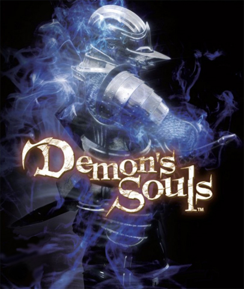
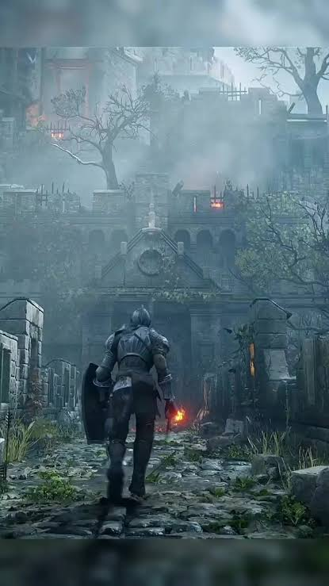
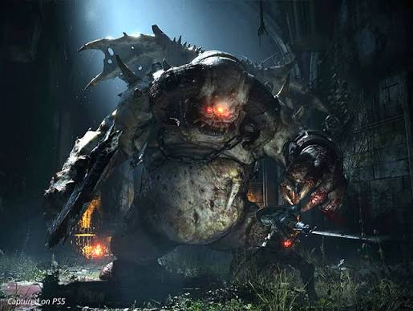
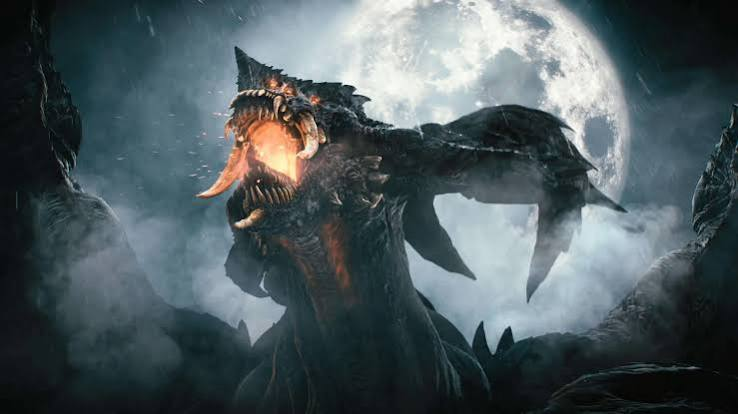

Demon's souls

Demon's Souls (デモンズソウル, Demonzu Souru) é um jogo eletrônico do gênero RPG de ação, desenvolvido principalmente pela FromSoftware e publicado no Japão pela Sony Computer Entertainment, na América do Norte pela Atlus USA e na Europa pela Namco Bandai Games, exclusivamente para o console PlayStation 3. O jogador irá ser transportado para o coração de Boletaria, um reino de guerreiros que foi destruído após o aparecimento de uma névoa que trouxe consigo bestas e demônios que se alimentam das almas dos mortais. O jogo é descrito como o sucessor espiritual da King's Field, lançada nos consoles PlayStation antecessores também pela From Software. Seu sucessor espiritual, Dark Souls, foi lançado para PlayStation 3, Xbox 360 e Microsoft Windows em 2011. Um remake, também intitulado Demon's Souls Remake, foi lançado em novembro de 2020 para PlayStation 5.
História

Rei Allant décimo segundo, em busca de poder e de prosperidade, canalizou o poder das almas. Ele trouxe prosperidade sem precedentes para o seu Reino do Norte Boletaria. Isto é, até um nevoeiro espesso preto cobrir todas as terras periféricas, a fim de cortar o reino do mundo exterior. Aqueles que entraram no nevoeiro nunca mais retornaram.
Mas foi apenas quando Vallarfax das presas gêmeas reais conseguiu sair do nevoeiro que o mundo soube sobre a situação de Boletaria. Ao canalizar as almas, o Rei Allant despertou O Antigo, uma grande besta que reside abaixo do Nexus. Com o despertar do Antigo, uma névoa escura varreu Boletária, libertando demônios que se alimentam das almas dos vivos. Os que perderam as suas almas perdem também a sua sanidade e se tornam violentos. O caos reinava, a loucura atacando a sanidade. Os Demônios cresceram e ficaram mais fortes e poderosos a cada alma que devoravam. A lenda diz que vários guerreiros entraram na terra amaldiçoada, mas nenhum deles retornou.
Jogabilidade
Demon's Souls é um RPG de ação gótico de finais abertos. Os jogadores podem criar seus personagens a vontade, colocando nome, sexo, estilo de cabelos, alterando detalhes da face como: nariz, bochechas, sobrancelhas, olhos, cor de pele, boca, orelhas etc. Os jogadores enfrentam grandes monstros (várias vezes o tamanho de um personagem), fazendo uso de muitas armas e equipamentos diferentes e customizáveis. A jogabilidade é alterada conforme a arma escolhida pelo jogador.
Recepção
Demon's Souls vendeu mais de 40 000 cópias em sua primeira semana no Japão, e aumentou as vendas de PlayStation 3 na região. Até dezembro de 2009, tinha vendido um total de 134.585 cópias no Japão. Na América do Norte, Demon's Souls estreou no décimo primeiro lugar na lista de Outubro de 2009, de acordor com o NPD Group, com mais de 150.000 cópias vendidas, vendendo mais de 500.000 até Setembro de 2010. Em seu lançamento no Japão, Demon's Souls foi bem recebido pelos críticos. A Dengeki concedeu ao jogo a nota 95/85/85/85, comentando que "fãs de jogos 'old-school' derramarão lagrimas de alegria". Famitsu deu a nota 29 de 40 (9/7/7/6) com o seguinte comentário de um de seus editores: "um jogo que você aprende como jogar através da derrota -- você frequentemente morrerá de forma súbita.
Mas continue jogando e você perceberá o quão profundo ele realmente é", enquanto outro editor achou o jogo "muito estoico... não é um jogo para qualquer um". Em seu lançamento na América do Norte, a resposta dos criticos foi muito favorável com uma média de notas de 90% no GameRankings e 90/100 no Metacritic. Mesmo o jogo apresentando uma alta dificuldade, muitos críticos consideraram isso como um aspecto positivo, tornando o o jogo mais recompensante de ser jogado. A GameSpot chamou a alta dificuldade de "justa", comentando que os jogadores irão "indiscultivelmente sofrer muitos danos até aprender as sutilezas de enfrentar cada inimigo, mas o combate passa um sentimento de ser funcional" IGN reforçou esta opinião, encorajando os jogadores que "podiam relembrar os bons dias antigos quando um jogo ensinava através do super efetivo métodos de reforço negativo e alto preço a se pagar por não jogar com cuidado, eles poderiam entender o jogo em um instante." A Game Informer chamou o jogo de "um dos primeiros RPGs Japoneses realmente bons desta geração, e certamente o mais notável.
" A Official U.S. PlayStation Magazine, no entanto, apesar de louvar o jogo como um todo, disse que Demon's Souls era "melhor deixado para os jogadores mais masoquistas e radicais". A GameZone comentou que o aspecto online do jogo era "inovativo" e "perfeitamente misturado ao jogo", enquanto a Game Revolution disse que ele "tornava uma experiência solitária em uma supreendentemente comunitária".

No lado técnico e de design, a Games Radar chamou o jogo de "graficamente impressionante, parecendo mais com os antigos jogos 'Ultima' do que com qualquer coisa que já saiu do Japão," enquanto a Game Trailers disse que o jogo "perfecciona o visual de fantasia sombria" junto com o que eles consideraram "musica de instrumentos reais", embora tenha haviado a reclamação da física do jogo ter alguns problemas de "tremulação". Logo após o lançamento Norte Americano, a ScrewAttack nomeou Demon's Souls como o oitavo melhor jogo exclusivo de PS3 até então. Antes do lançamento do jogo na Europa, críticos europeus avaliaram versões importadas do jogo. A Eurogamer chamou Demon's Souls "estoico, sem compromissos, dificil de aprender, mas ao mesmo tempo profundo, intrigantemente perturbado e perversamente recompensante" enquanto a Edge explicou sua visão positiva quanto a dificuldade do jogo dizendo que " se o maior apelo dos jogos estão em aprender e perfeccionar novas habilidades, então certamente as melhores emoções são achadas nas liçoes mais difíceis" concluindo que "para aqueles que passarem pelos testes estrítos de , não há maior senso de conquista virtual;.
" Os resultados favoraveis nas resenhas de Demon's Souls fizeram com que a performance fiscal do jogo fosse única, devido a falta do suporte de uma campanha de marketing. O analista de jogos Jesse Divnich comentou: "Demon's Soul é um dos jogos mais relevantes para as estatisticas de jogos, pois ajuda a responder uma questão recorrente: quanto que um jogo de alta qualidade consegue vender quando não tem a ajuda de uma campanha massiva de marketing, sendo lançado por uma distribuidora pouco conhecida(Sem querer ofender a Atlus) e sendo uma nova Propriedade Intelectual?” Com o sucesso comercial e crítico do jogo, O Vice Presidente de software internacional da Sony Computer Entertainment admitiu que foi um "erro" deixar o jogo passar, deixando que a Atlus o publicasse, devido a preocupações com sua dificuldade e decisões incomuns de design.

https://pt.wikipedia.org/wiki/Demon%27s_Souls